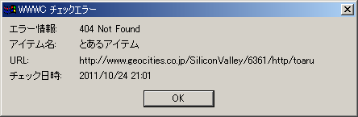
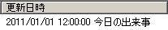
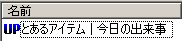
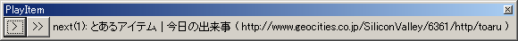
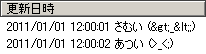

<< トップページへ
WWWC用改造HTTPプラグインの設定方法
WWWC用改造HTTPプラグインの独自部分の説明をします。
その他の基本的な設定方法は WWWC のヘルプを参照してください。
ページ配色は WWWC のヘルプ風味。
目次
保存されるアイテム情報の違い
以下のアイテム情報の保存領域が、改造版独自のアイテム情報の保存領域として使われています。
本来のアイテム情報が保存されないほか、そのアイテム情報を読み書きするプラグインで不具合が発生する可能性があります。
- 旧サイズ → サイト URL
- 旧更新日 → 「RSS / Atom フィード」「リンク抽出」チェック用設定
- エラー情報 → 更新情報、エラー情報
プロトコル設定
チェックタブ
- エラーを通知する
- チェック時にエラーが生じた場合、エラー内容に関するメッセージボックスを表示します。

フィードタブ
チェック方法「RSS / Atom フィード」「リンク抽出」の設定です。
- 更新情報を更新日時に追加
- 更新情報（エラー情報を含む。以下同じ。）を更新日時に追加します。
例えば更新情報が「今日の出来事」、更新日時が「2011/01/01 12:00:00」のとき、「2011/01/01 12:00:00 今日の出来事」を更新日時として設定します。
これは、元の改造版におけるフィードチェックの更新通知方法に倣ったものです。

- 更新情報をアイテム名に追加
- 更新情報をアイテム名に追加します。
例えば更新情報が「今日の出来事」、アイテム名が「とあるアイテム」のとき、「とあるアイテム | 今日の出来事」をアイテム名として設定します。
これは、更新されたアイテム名が表示される PlayItem で、更新情報も表示することを主目的としたものです。
なお、この設定に関わらず更新情報も表示するようにした改造版 PlayItem もあります。


- &を2重に復元(&quot; -> ")
- フィード内の & を2重に復元します。
XML 内で、例えば「>」であれば本来は「>」と変換されているべきところで、2重に変換されて「&gt;」となっているとき、
チェック時における通常の復元処理では、「>」に復元されますが、これをもう1回復元処理を行い「>」に復元します。
これは、Twitter の RSS 内での実体参照において、& 記号 が & として2重に変換されていることに対応することを目的としたものです。

- 新着記事を個別に更新通知
- 新着記事を個別に更新通知します。
1つのアイテムで複数の新着記事があった場合、通常は、最新記事名を更新情報とし、全新着記事の URL を半角スペースで繋げたものが開く URL として設定されるのに対し、この設定では、個々の新着記事を仮想的なアイテムとして、別々に更新通知を出します。
これは、更新メッセージウィンドウや PlayItem などで、個々の新着記事の更新情報を1件ずつ見ながら操作することを主目的としたものです。
アイテム設定
チェックタブ
RSS / Atom フィード
フィードをチェックし、前回の更新日時より新しい日時の記事を全て更新通知します。
ただし、未来の日時の記事は無視されます。
- URL / 題名 / カテゴリ / 内容 / 要約
- 記事情報を正規表現で指定することによって、新着記事を取捨選択することができます。
検索条件を入力欄に1行1件で記述し、そのいずれかとの一致を見ます（OR 検索）。
選択方式により、検索条件に一致した、またはしなかった記事が更新通知から除外されます。
- 選択 : 一致した記事のみ選択し、他の記事を除外します
- 選択 (OR) : この方式を設定した項目のいずれかで一致した記事のみ選択し、他の記事を除外します
- 除外 : 一致した記事を除外します
各項目の対象となる XML 要素
|
RSS 1.0 |
RSS 2.0 |
Atom 0.3 |
Atom 1.0 |
| カテゴリ |
dc:subject |
category |
dc:subject |
category (term 属性) |
| 内容 |
content:encoded |
content:encoded |
content |
content |
| 要約 |
description |
description |
summary |
summary |
- ソース置換
- フィード内から新着記事を取り出す前に、フィードのソースを置換します。
検索表現とこれに対する置換文字列を、入力欄に1行ごと、2行1組で繰り返し記述します。
想定外の XML 要素をフィルタ対象の要素に置換したりできます。
URL抽出
HTML 文書中のリンクなど、検索表現に一致する新たな文字列を新着 URL として抽出し、更新通知します。
検索表現に一致しさえすれば、検索対象は特に A タグには限りません。
- 検索順序
- 検索表現に一致した文字列に対して、新着と判断する基準です。
- 上から : チェック対象を上（先頭）から検索し、前回の検索結果の一番上のものが出てくるまでを新着とします
- 下から : チェック対象を下（末尾）から検索し、前回の検索結果の一番下のものが出てくるまでを新着とします
- 全部 : チェック対象を全て検索し、前回はなかったものを新着とします
- URL検索
- チェック対象から、URL を正規表現で検索します。
- URL整形
- 検索に一致した文字列に対し、後方参照を使って最終的な URL に整形します。
検索結果に対して URL 部分を指定したり、相対リンクを補完して完全な URL にしたりします。
- 更新情報検索
- チェック対象から、アイテム情報に使う更新情報を正規表現で検索します。
省略可。
- 更新情報整形
- 検索に一致した文字列に対し、後方参照を使って最終的な更新情報に整形します。
検索結果に対し更新情報部分を指定したりします。
「更新情報検索」を省略している場合、「URL検索」の後方参照が使われます。
省略可。
オプションタブ
- WSSE
- WSSE 認証をします。
かつては mixi などで使われていましたが、現在では廃れた認証方式です。
- OAuth
- OAuth 認証をします。
OAuth はユーザ名・パスワードではなく、トークンを使って認証をします。
「トークン取得」ボタンを押し、表示されたダイアログの指示に従ってトークンを取得してください。
「ユーザ」「パスワード」欄は、手入力の必要はありません。
OAuth は、その規格上、対応アプリケーションを各ウェブサービスに登録する必要があります。
通常はアプリケーションの作者がこの登録をしますが、この改造プラグインは特定ウェブサービス用のアプリケーションというわけではないので、利用者が使いたい個々のウェブサービスに、改造プラグイン作者が逐一登録をしにいくのは現実的ではありません。
従って、各ウェブサービスへのアプリケーションの登録は、各利用者が行ってください。
登録情報をプラグインへ設定するには、ini ファイルを作成してください。
oauth_<対象サイトのホスト名>.ini
という名前で、プラグイン DLL と同じフォルダにファイルを作り、中に設定を記述します。
設定様式は、同梱の sample-oauth_api.twitter.com.ini を参照してください。
使用例：Gmail
- https://console.developers.google.com/ でアカウント設定をする。操作画面が時折変更されるので、該当項目を適宜探してほしい。
- 「プロジェクトを作成」
- プロジェクト名：このプラグインを指す適当な名前
- プロジェクトID：このプラグインを指す適当なID
- 「API」
- 「同意画面」
- スコープ：https://mail.google.com/ を追加
- 他、適宜入力
- 「認証情報」
- OAuth クライアント ID を作成
- アプリケーションの種類：その他（インストールされているアプリケーション）
- 「クライアント ID」「クライアント シークレット」を控える
- WWWC の設定
- WWWC を終了した状態で、同梱の sample-oauth_mail.google.com.ini を oauth_mail.google.com.ini に名前変更して DLL と同じフォルダに置く
- oauth_mail.google.com.ini を開き、「ClientIdentifier」と「ClientSecret」の値を、上記で控えた「クライアント ID」「クライアント シークレット」にして保存する
- WWWC を起動してアイテムを作成
- 全般 タブ
- チェックするURLに「https://mail.google.com/mail/feed/atom」を入力する
- ここで一旦「OK」してアイテム作成を終了させてから、再度当該アイテムのプロパティを開く
- チェック タブ
- オプション タブ
- 「行う」をチェックする
- 「OAuth」をチェックする
- 「トークン取得」ボタンを押し、ダイアログの説明に従ってトークンを取得する
とすると、最も新しい未読メールの日時がWWWCの更新日時、件名が更新情報となる。
- Set-Cookieを保存（無制限）
- 受信した Set-Cookie を全て保存し、次以降のチェックで使用します。
Cookie の適用範囲などの指定は全て無視されます。
- IEと供用で自動送受信する
- Internet Explorer と同じ Cookie を使います。
- HTTPS通信に対する盗聴・改竄等を防がない
- HTTPS 通信時に、通常は異常として遮断すべき不正なサーバ証明書による通信を行います。
これは、不正なサーバ証明書を使用しているサーバ上のページをチェックすることを主目的としています。
サーバ証明書は暗号化通信の相手を確認するために使われるため、不正なサーバ証明書を受け入れる場合、第三者が接続先サーバになりすましたりできるようになります。
このため、盗聴や改竄を防げず、通信内容を秘匿するという本来の暗号化通信は成立しません。
- 更新時に実行
- アイテムに更新があったとき、下欄で指定のプログラムを、引数に「ブラウザで開くURL」を付けて実行します。
プログラムのパスがスペースを含む場合は「"」で括ってください。
プログラム指定には他の引数を付けておくこともできますが、この場合、引数の区切りとなるスペースを末尾に加えておく必要があります。
- 更新通知しない
- 更新通知を出さないようにします。
これは、アイテムの更新をプログラム実行のトリガーとしてだけ使うことを主目的としています。